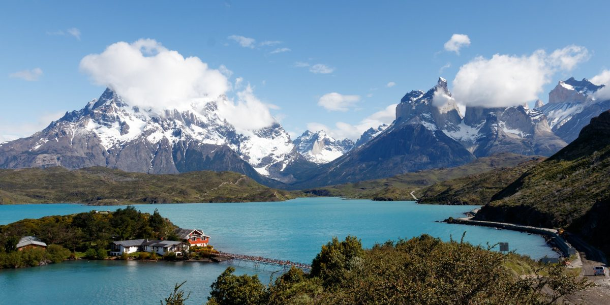

Explorando nuevos destinos
Hoy en día, muchas personas planifican sus viajes usando herramientas en línea: buscadores de vuelos, reservas de alojamiento y reseñas en tiempo real.

Experiencias personalizadas
Gracias a las aplicaciones móviles y páginas web, es posible recibir recomendaciones personalizadas según nuestros intereses, presupuesto y tiempo disponible.